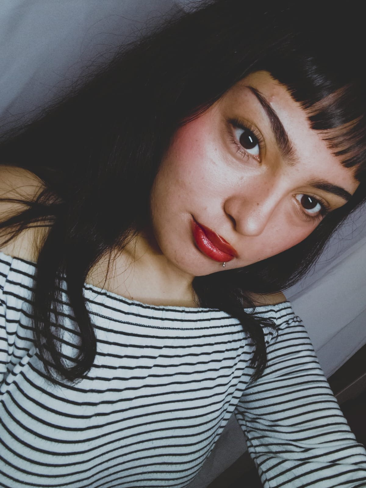
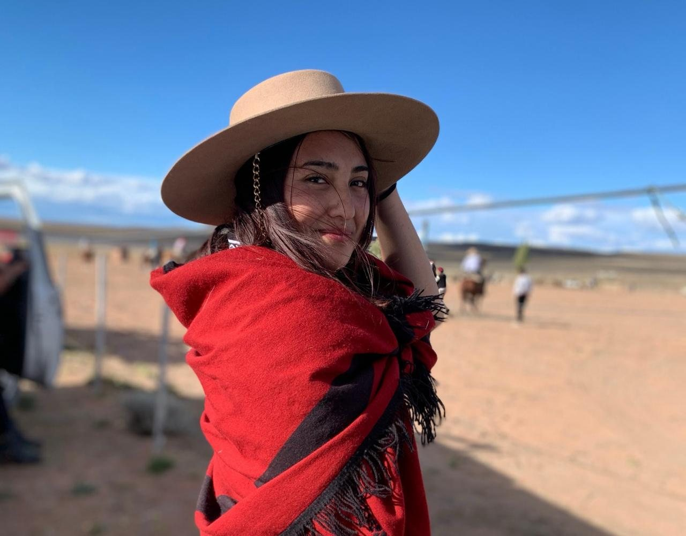
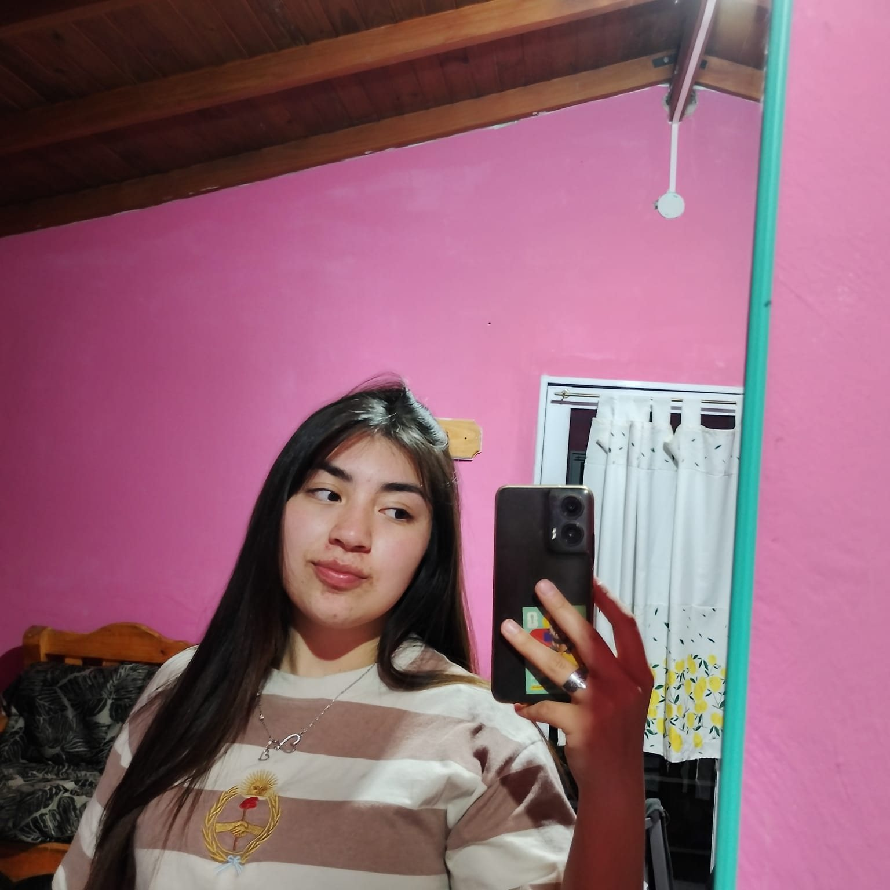
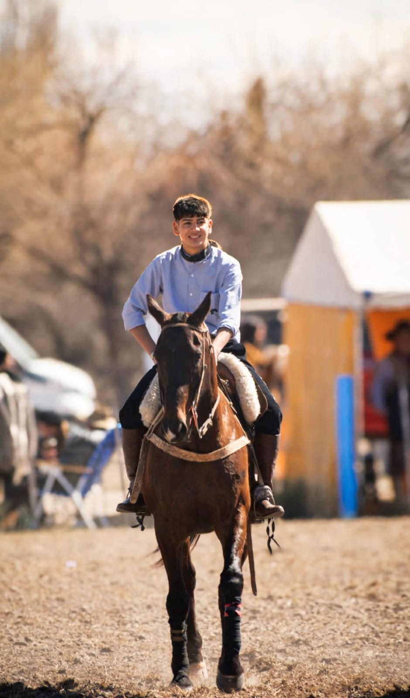
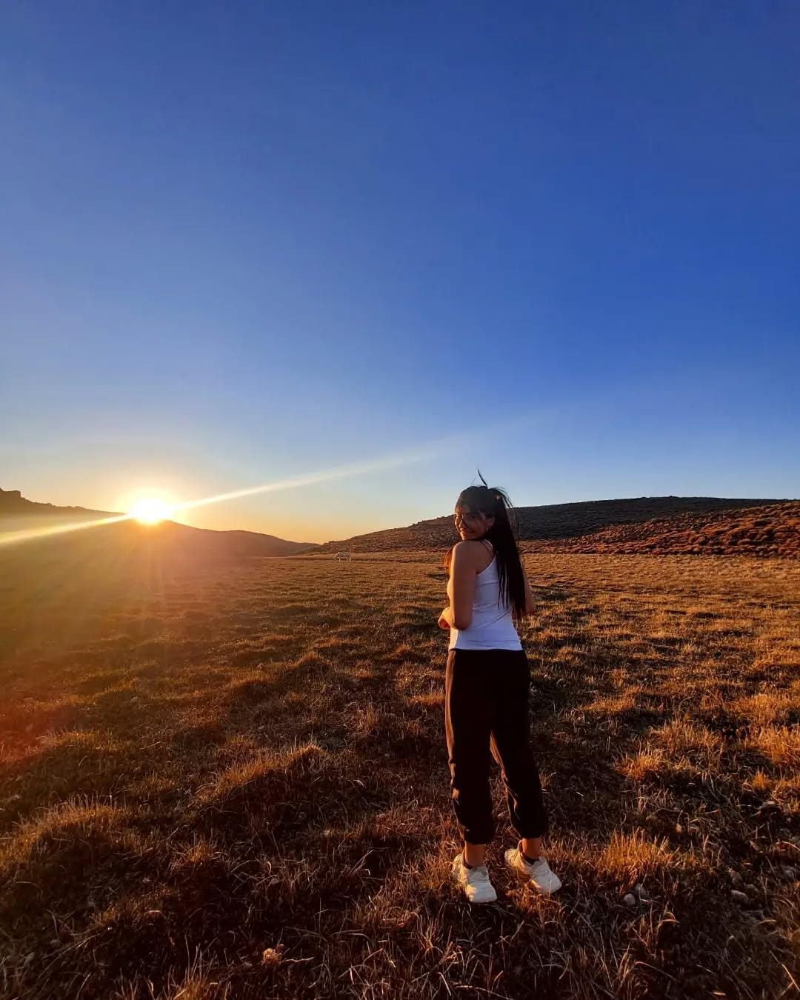
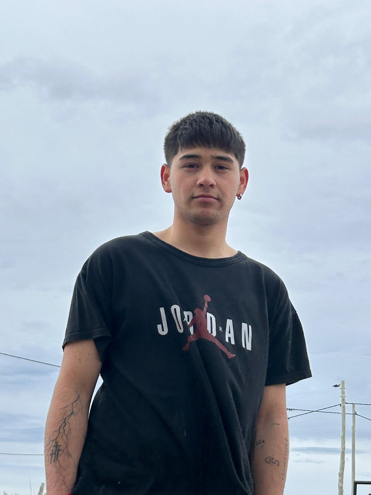
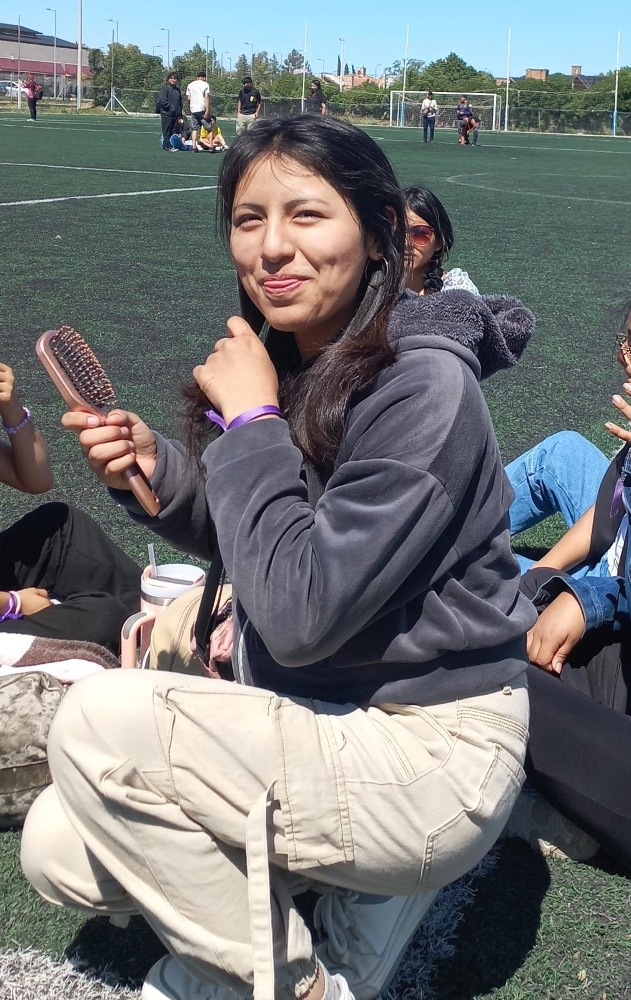
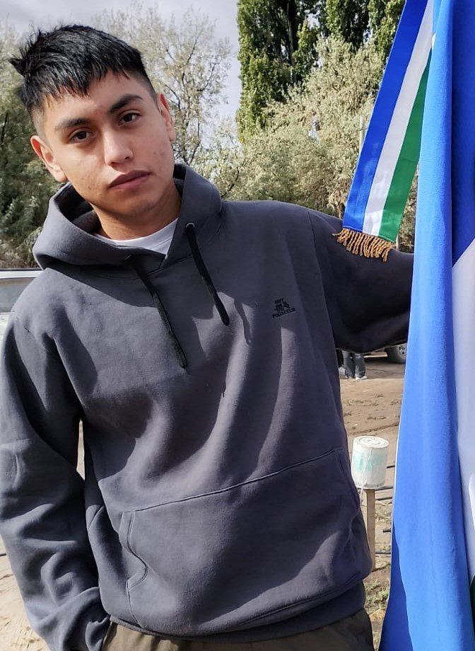
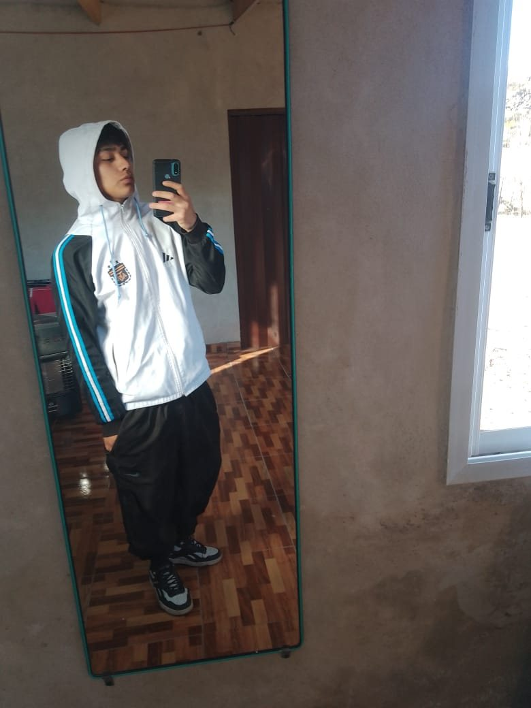

Para la promoción 2026
Hoy se egresa. Cada uno lo hizo desde su pueblo, su valle, su ruta — y muchos desde la cocina, con la compu apoyada en una mesa y la familia alrededor. Esta página es para decirles, de frente y sin apuro, lo orgullosos que estamos.
¡Felicidades!
La promoción, en fotos
Algunas caras de quienes llegan al final de esta etapa, con la mejor sonrisa.
Rocío Abigail Lincopan Mencué 
Sol Antonella Contrera Aguada Cecilio Milagros, Lucila, Lázaro y Agustín Cerro Policía Faustino Vergara Mayer Corralito 
Cecilia López Amacio Colan Conhué Isaías Ñanco Mencué 
Ludmila Montre Arias Mencué Milagros Cañumil Aguada Cecilio 
Leonel Maliqueo Laguna Blanca 
Selene Varnes Laguna Blanca 
Yordan Montecinos Laguna Blanca Fernando Gauna Peñas Blancas 
Zaida Calle Torrez Peñas Blancas Benjamín Paillalef Villa Llanquín 
Carlos Quichan Yaminué 
Enzo Calluhuequi Yaminué
Las y los egresados
Veintiún sedes de Río Negro, veintiún viajes distintos. Cerraron su Ciclo Orientado en Ciencias Naturales o en Turismo, y así está escrito al lado de cada nombre.
Aguada Cecilio Cañumil , Milagros Alejandra Ciencias Naturales Contrera , Sol Antonella Ciencias Naturales Aguada de Guerra Echegoy , Marcos Agustín Ciencias Naturales Vera , Matías Alejandro Ciencias Naturales Catalán , Rocío Noemí Ciencias Naturales Pintos , Yaqueline Mayra Ciencias Naturales Aguada Guzmán Arroyo los Berros Cayul , Cristian Nahuel Ciencias Naturales Cerro Policía Criban , Agustín Ciencias Naturales Pelliza , Keila Ciencias Naturales Faría , Lázaro Ciencias Naturales Pelliza , Lucila Ciencias Naturales Andres Martiarena , Milagros Ciencias Naturales Colan Conhué López Amacio , Cecilia Marilí Ciencias Naturales Comicó Cañehuán , Alexis Isaías Ciencias Naturales Cona Niyeu Yanca Pazos , Milena Ludmila Turismo Corralito Vergara Mayer , Fautino Manuel Turismo El Caín Llancafil , Dalma Yanina Ciencias Naturales Lleiful , Denis Nahuel Ciencias Naturales El Cóndor Aguirre , Agustina De Jesús Ciencias Naturales Vargas , Ariana Joselin Ciencias Naturales Romero , Cristian Tomás Turismo Fernández , Luz Turismo Florentino , Martín Ignacio Ciencias Naturales Monsalve , Mateo Valentín Turismo Deluchi , Sofía Turismo García , Sofía Turismo El Manso Miranda Rodríguez , Jeremías Leonardo Turismo Monsalbe , Leonel Uriel Turismo Soria , Mario Enrique Turismo Ulloa , Sol Antonella Turismo Lago Pellegrini Moreira , Alejandro David Turismo Aravena , Alexis Joaquín Turismo Cabezas , Antonella Esther Ciencias Naturales Zúñiga Olave , Bautista Alejandro Ciencias Naturales Gueladi , Benjamín Daniel Turismo Iriarte Condori , Brenda Gisella Turismo Medrano , Catalina Antonella Ciencias Naturales Muñoz Guerrero , Daira Sarai Ciencias Naturales Pablo , Dylan Aaron Ciencias Naturales Pardo , Jeremías Samuel Ciencias Naturales Lagos , Jonás Daniel Ciencias Naturales Pardo , José Antonio Ciencias Naturales Sarmiento , Lara Macarena Turismo Rubilar , Lautaro Gabriel Turismo Paredes , Luzmila Jazzmín Andrea Turismo Aravena , Sahiara Ayelén Turismo Nuñez , Sofía Abigaíl Ciencias Naturales Morel , Tobías Ciencias Naturales Laguna Blanca Maliqueo , Alexander Leonel Ciencias Naturales Varnes , Selene Mery Ciencias Naturales Montecinos , Yordan Cleofás Ciencias Naturales Mencué Lincopan , Abigail Rocío Ciencias Naturales Ñanco , Isaías Daniel Atahualpa Turismo Montre Arias , Ludmila Agostina Ciencias Naturales Peñas Blancas Gauna , Fernando Ciencias Naturales Calle Torrez , Zaida Camila Ciencias Naturales Rincón Treneta Lebeau , José Luis Ciencias Naturales Río Chico Osuna , Gonzalo Ezequiel Ciencias Naturales Cahuimpan , Milagros Noemí Ciencias Naturales Valle Verde Mancilla , Kiara Yael Ciencias Naturales Godoy , Lautaro Elías Ciencias Naturales Villa Llanquín Paillalef Parra , Benjamín Gonzalo Turismo Yaminué Quichan , Carlos Lisandro Ciencias Naturales Calluhuequi , Enzo Leonel Ciencias Naturales Quichan , Lautaro Ismael Ciencias Naturales
Gracias
No se despidan: apenas están empezando. Gracias por estudiar lejos, por insistir, por quedarse. Gracias por dejar la escuela un poco mejor de como la encontraron.
Con cariño, la ESRN Rural Virtual